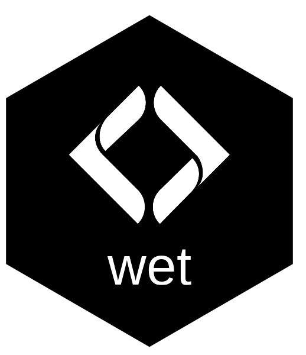

Hydrometric stations beyond HYDAT that wet reads
Source:R/wet_station_list.R
wet_station_list.RdOne row per station of the networks wet_station_daily() reads outside
Water Survey of Canada's HYDAT, with where each sits, the days it holds, and
the HYDAT station at the same site where there is one. For HYDAT's own
stations, use wet_station_select().
Usage
wet_station_list(
sources = c("bcenv", "bcwatertool", "hakai"),
snapshot = wet_bcenv_snapshot
)Value
data.frame(station_number, name, lon, lat, source, network, first, last, regulation, hydat_site, hydat_km, licence, credit), one row
per station, ordered by source and number. first and last are the
first and last days wet_station_daily() returns for the station (NA
for one with no complete day), recorded when the snapshot was pinned and
held to the reader's days by the package's harvest check whenever its
rules change; hydat_km is the distance to hydat_site; licence and
credit are the terms the source's data carry and the line to credit it
with (a Water Tool file states no licence, so its licence is NA, and
its credit is its file's own statement, its liability disclaimer left
out).
Details
Three such sources: the province's non-integrated hydrometric network
("bcenv"), stations run by the province and its partners whose hourly
discharge the province publishes beside HYDAT; the third-party gauges the
BC Water Tool serves ("bcwatertool"): regional districts, industry, BC
Hydro, the Regulator and research projects, each network the Tool names;
and Hakai Institute's published package ("hakai") for seven small Calvert
and Hecate island watersheds, 2013-2019. All three lists come from pinned
copies made with the package, so they need no download.
A station at a HYDAT site keeps its own number, and its days are never
joined to the HYDAT station's: hydat_site names that station (the same
stream name within 1 km) so a caller can join the two. A Water Tool gauge at
a provincial station's site is not listed: its days before the provincial
record begins continue that station's record under the provincial number
(see wet_station_daily()), and the provincial row's first, licence and
credit say so when both sources are listed. Three of Hakai's watersheds
continue provincial stations the same way; its other four are stations of
their own, listed under the package's numbers ("WTS693", ...).
regulation is each station's status from what sits upstream of it, one
for the year as a whole, under a rule registered before it was applied:
"regulated" where the name says so (a dam, diversion, intake and
similar), an active dam in the provincial register's regulated classes
sits upstream, or licensed consumptive use or licensed storage upstream is
at least 10 % of the segment's published mean annual flow;
"unknown" where the station could not be placed on the Freshwater Atlas
stream its name or drainage area gives, part of its basin lies outside BC,
a power licence or a licence that states no volume draws upstream, or its
segment has no published flow; and
"natural" otherwise. No natural station holds the 10 years of 1981–2010
record a baseline needs, and on a baseline estimated from HYDAT gauges they made departures
carried from donors worse at held-out HYDAT gauges, so they serve as records
and held-out tests, not donors. The status, its reasons and the shares are in
the package's extdata/station_sources/regulation_<snapshot>.csv. They
use BC's dam register (contains information licensed under the Open
Government Licence - British Columbia) and are computed from the
Province of British Columbia's water rights licences, whose terms are
"Access Only": no licence record is reproduced.
Examples
s <- wet_station_list()
table(s$source)
#>
#> bcenv bcwatertool hakai
#> 211 46 4
# stations at a HYDAT station's site, carrying its record on in new years
head(s[!is.na(s$hydat_site), c("station_number", "name", "first", "last", "hydat_site", "hydat_km")])
#> station_number name first last
#> 4 08EE0001 Deep Creek at Farewell Bridge 2016-05-04 2018-11-22
#> 8 08HA0001 Bonsall Creek at HWY 1 2016-08-06 2019-10-28
#> 12 08HA0019 Cusheon Creek at Outlet of Cusheon Lake 2017-05-26 2017-10-18
#> 13 08HA0020 Fulford Creek near Fulford Harbour 2018-02-16 2024-11-21
#> 15 08HA0022 Koksilah River at Trestle 2021-10-01 2026-10-02
#> 19 08HA0027 Patrolas Creek at Moss Road 2018-07-05 2019-09-11
#> hydat_site hydat_km
#> 4 08EE022 0.14
#> 8 08HA022 0.86
#> 12 08HA026 0.04
#> 13 08HA055 0.21
#> 15 08HA045 0.06
#> 19 08HA019 0.20
# the Water Tool's networks
table(s$network[s$source == "bcwatertool"])
#>
#> BC Conservation Foundation (Vancouver Island)
#> 1
#> BC Environmental Assessment Office (EAO)
#> 7
#> BC Hydro
#> 5
#> Capital (Regional District)
#> 8
#> Geoscience BC
#> 7
#> Oil and Gas Industry Network
#> 10
#> Regulator – BC Oil and Gas Commission
#> 6
#> UNBC (Collected for academic research project)
#> 2